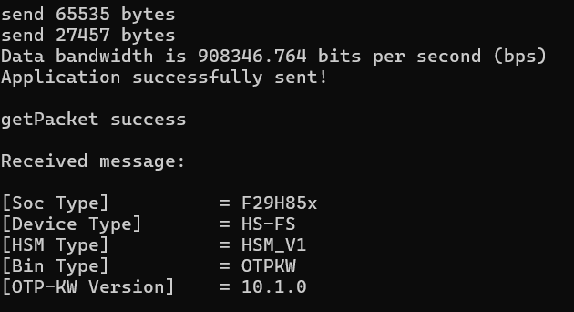
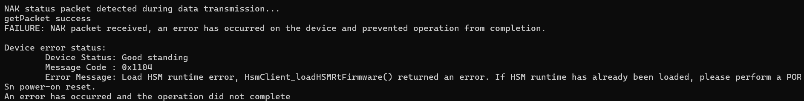
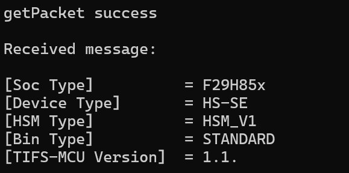
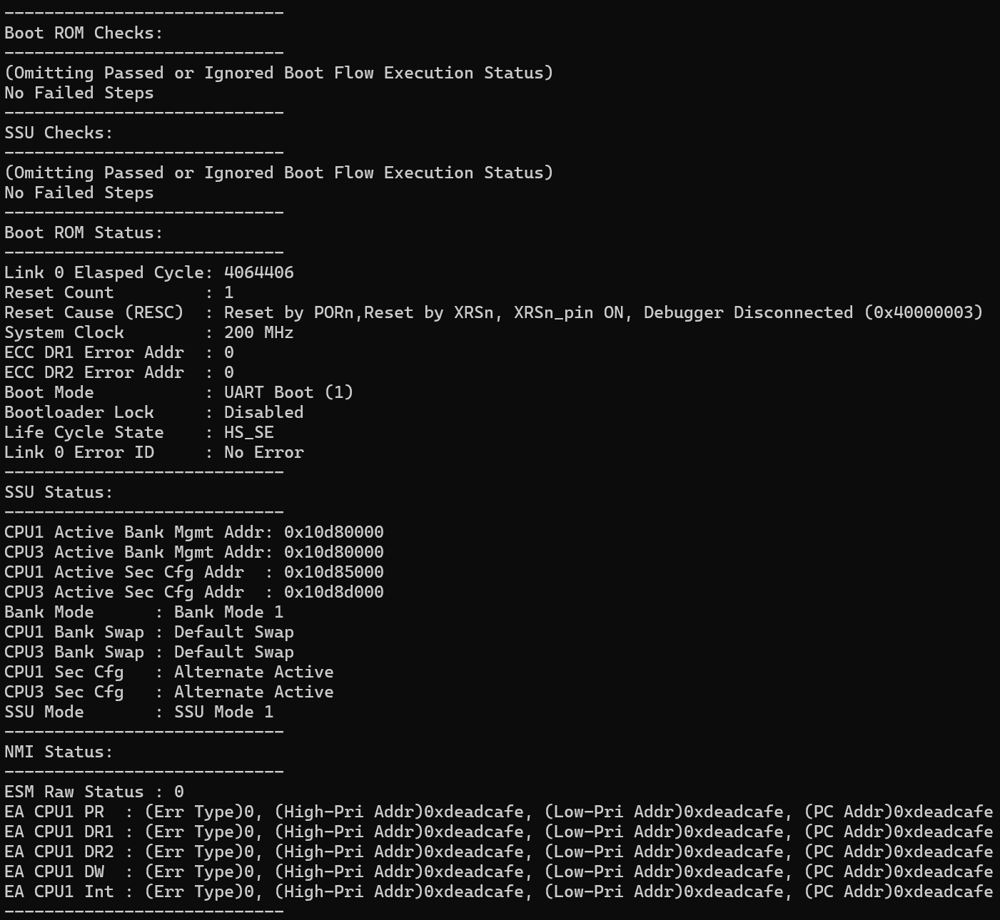
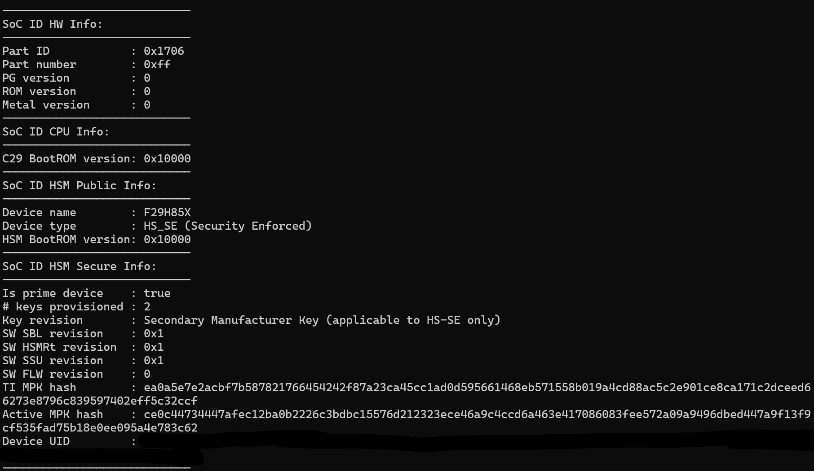

F29x RAM-based UART SBL example, formerly named UART Flash Kernel.
Located in F29H85X-SDK /examples/driverlib/single_core/flash/ram_based_sbl
Introduction
This example serves as a bootloader that leverages UART boot to perform programming operations.
The UART Flash Programmer CLI is required to interface with the device via UART. More details are provided in the following sections.
Getting Started
To fully understand this example, it is highly recommened to first review the foundational concepts outlined in the Uart Flash Programmer document.
The document covers essential topics such as device lifecycle, firmware update methodologies (DFU,FOTA,LFU) and flash bank modes, which are prerequisites for a complete understanding of this SBL.
Software Overview
The RAM-based UART Secondary Bootloader (SBL), in a nutshell, is an intermediate piece of code that runs in RAM. It is downloaded to the device by the UART Flash Programmer via UART boot. Once loaded, it receives commands from the flash programmer and performs the corresponding programming operations.
The primary purposes of the RAM-based UART SBL are:
- Device bring-up
- Convert the device into HS-SE which enforces HSM & SSU security.
- Programs any CPU/HSM flash applications.
- Device Firmware Update (DFU)
- Supports both unsecure and secure (CP) programming.
For instructions on how to use the RAM-based SBL, refer to the "Example Demonstration" section.
Build Configurations
The example provides configurations for both nonsecure programming and secure programming (KP & CP), to a total of four build configurations:
| RAM-based SBL build configuration |
| NONSECURE_DFU | • CPU Flash Programming
• HS-FS only |
| SECURE_KP_AND_CP | • KP and CP
• HS-FS, KP and SE
• Requires RAM-based HSM runtime |
| SECURE_ONLY_KP | • Key Provision only
• HS-FS or HS-KP
• Requires RAM-based HSM runtime (OTP Keywriter) |
| SECURE_ONLY_CP | • Code Provision only
• HS-KP or HS-SE
• Requires RAM-based HSM runtime (CP services) |
NONSECURE_DFU contains the DFU operations via CPU's Flash API without HSM involvement. It can only be run on a device in HS-FS, where device security features are not enforced.
SECURE_KP_AND_CP consolidates the key and code provisioning code to support the full device conversion from HS-FS to HS-KP and then to HS-SE. In contrast, the KP_ONLY configuration contains only the operations for converting to HS-KP, and the CP_ONLY configuration contains only the operations for converting and programming in HS-SE. See the "Available Commands" section for the supported operations for each.
While SECURE_KP_AND_CP can be seen as a superset of the other two and is recommended for development due to its simplicity, they differ in the available encryption options, as detailed in the "Post-Build Steps" section.
Build Options
Two build options are provided in the \ccs folder: importing a CCS project or using a Makefile.
- CCS project:
- In CCS, click on "Import CCS Projects..." and select "ram_based_uart_sbl"
- Select the project and choose the desired build configuration.
- Build the project "ram_based_uart_sbl", and it will produce a X.509 certificate prepended binary image
ram_based_uart_sbl.bin.
- Makefile:
- First, make sure all required Makefile dependency paths are properly set up (see Makefile based Build)
- To build the makefile, within
\ccs folder, do:
- For NONSECURE_DFU config, use
Make -f ram_based_sbl.mk all
- For SECURE_KP_AND_CP config, use
Make -f ram_based_sbl.mk all APP=SECURE
- For SECURE_ONLY_KP config, use
Make -f ram_based_sbl.mk all APP=KP
- For SECURE_ONLY_CP config, use
Make -f ram_based_sbl.mk all APP=CP
- It will a;sp produce a X.509 certificate prepended binary image
ram_based_uart_sbl.bin
Post Build Steps
The post-build step is responsible for converting the generated .out file into a binary image and prepending it with an X.509 certificate. While all configurations follow a similar flow, each uses slightly different certificate generation parameters due to different authentication requirements for device boot.
- NONSECURE_DFU
- In HS-FS, no authentication is required, so any dummy certificate will suffice
NONSECURE_DFU
$(PYTHON) ${COM_TI_MCU_SDK_INSTALL_DIR}/tools/boot/signing/mcu_rom_image_gen.py --image-bin ${ProjName}.temp.bin --core C29 --swrv 1 --loadaddr 0x200E1000 --sign-key ${COM_TI_MCU_SDK_INSTALL_DIR}/$(SIGNING_KEY) --out-image ${ProjName}.bin --boot RAM --device f29h85x --debug DBG_SOC_DEFAULT;
- SECURE_KP_AND_CP
- The key used for signing must match the user key programmed on the device
- Imagine integrity checks enabled
SECURE_KP_AND_CP
$(PYTHON) ${COM_TI_MCU_SDK_INSTALL_DIR}/tools/boot/signing/mcu_rom_image_gen.py --image-bin ${ProjName}.temp.bin --core C29 --swrv 1 --loadaddr 0x200E1000 --sign-key ${COM_TI_MCU_SDK_INSTALL_DIR}/$(SIGNING_KEY) --out-image ${ProjName}.bin --boot RAM --device f29h85x --debug DBG_SOC_DEFAULT --img_integ yes;
- SECURE_ONLY_KP
- The key used for signing must match the user key programmed on the device
- Imagine integrity checks enabled
SECURE_ONLY_KP
$(PYTHON) ${COM_TI_MCU_SDK_INSTALL_DIR}/tools/boot/signing/mcu_rom_image_gen.py --image-bin ${ProjName}.temp.bin --core C29 --swrv 1 --loadaddr 0x200E1000 --sign-key ${COM_TI_MCU_SDK_INSTALL_DIR}/$(SIGNING_KEY) --out-image ${ProjName}.bin --boot RAM --device f29h85x --debug DBG_SOC_DEFAULT --img_integ yes;
- SECURE_ONLY_CP
- The key used for signing must match the user key programmed on the device
- Imagine integrity checks enabled
- SBL encryption enabled w/ key-derivation salt
SECURE_ONLY_CP
$(PYTHON) ${COM_TI_MCU_SDK_INSTALL_DIR}/tools/boot/signing/mcu_rom_image_gen.py --image-bin ${ProjName}.temp.bin --core C29 --swrv 1 --loadaddr 0x200E1000 --sign-key ${COM_TI_MCU_SDK_INSTALL_DIR}/$(SIGNING_KEY) --out-image ${ProjName}.bin --boot RAM --device f29h85x --debug DBG_SOC_DEFAULT --img_integ yes --sbl-enc --enc-key ${COM_TI_MCU_SDK_INSTALL_DIR}/tools/boot/signing/mcu_custMek.key --kd-salt ${COM_TI_MCU_SDK_INSTALL_DIR}/tools/boot/signing/kd_salt.txt;
The biggest difference between SECURE_KP_AND_CP and SECURE_ONLY_CP is that the latter supports image encryption (via SMEK/BMEK), whereas the former does not, since image encryption is not supported on an HS-FS device.
Therefore, if the SBL image and its X.509 certificate are considered secret, using two separate KP and CP SBL images is preferred. The KP SBL can be kept internal to burn the key into the device, and the encrypted CP SBL can be safely distributed to external parties for any field programming.
By default, all certificate generation examples use mcu_custMek.key as the signing key. It is recommended to first conduct the device conversion exercise to HS-SE using this default signing key.
Memory Partition
In peripheral UART boot, the maximum size of the RAM bootloader is limited to 98 KB, which includes:
- 65KB LPAx RAM
- 0x10000 bytes
- executable RAM
- 32KB CPA0 RAM
- 0x8000 bytes
- non-executable RAM
Therefore, executable code is limited to the size of LPAx RAM, unless it is stored in CPA0 and copied to uninitialized executable memory (LDAx RAM) via a linker copy table or memcpy.
Below is the F29H85x memory layout in peripheral boot mode:
(R-read, W-write, I-initialize, X-execute)
- LDAx RAM (RWX)
- Accessible by CPU1 & HSM
- LDA7 - LDA2 reserved by RAM-based HSM runtime
- LDA1 - LDA0 used by RAM-based SBL
- LPAx RAM (RWIX)
- CPA0 RAM (RWI)
- CPA1 RAM (RW)
- CDAx RAM (RW)
LDAx is unique due to its shared access between the SBL (running on CPU1) and the HSM. LDA7-2 are reserved for the RAM-based HSM runtime, which provides services for secure programming. During these services, the HSM must access objects passed from the CPU via Secure IPC. Therefore, the security libraries included by the SBL, which consist of HSM client calls and SIPC functions, must reside in LDAx for the HSM to access them, along with the SBL stack.
For this reason, the SBL's LDA1 RAM is solely reserved as a scratchpad to pass programming/authentication data to the HSM, while LDA0 RAM contains the security library, stack, and any HSM-accessible global variables. This memory configuration is retained for the unsecure configuration as well, with LDA1 used to store the certificate and Flash API to further utilize the scratchpad and save LPAx RAM space.
sbl_ramopen_lnk.cmd
/* LDA1 is reserved as a scratchpad to pass in rcvd img to HSMRT for authentication (KP & CP) or to store Fapi (DFU, or program bankmodes in KP/CP with mannual copy to re-populate the library) */
UNION: RUN = SRAM_LDA1
{
secure_scratchpad : { . = . + 0x4000; } /* Map HSM authenticate data to HSM accessible region */
GROUP:
{
cert_scratchpad : { . = . + 0x1000; }
/* Due to limited LPAx space (initalized and executable RAM), store fapi in CPA0 (non-executable) and *manually* copy_in & run in LDA1 (scratchpad) when needed */
fapi : {"*F29H85x_NWFlashAPI*.lib"(.text)} LOAD=SRAM_CPA0, table(fapiCopyTable)
}
}
hsmlib : {"*security_drivers.lib"(.text)} RUN=SRAM_LDA0, LOAD=SRAM_CPA0, table(BINIT) /* Map HSMClient and SIPC funcs to HSM accessible region (LDAx) */
Device Setup
The SBL UART TX/RX pins are mapped to GPIO 42/43, which are also the default pins for UART boot and Flash-based UART SBL in F29H85x .
- On the F29H85x SOM, GPIO 42/43 are routed to the UART extension pins of the XDS110 JTAG debugger, therefore no addintional setups are required.
- On the F29H85x Launchpad, GPIO 42/43 are exposed as standard GPIO headers, and an UART transeciver is needed to connect the device with the host PC.
Available commands
The list below shows the commands supported by the UART Flash Programmer for the RAM-based SBL configurations:
Unsecure:
- CPU1 DFU/FOTA
- CPU3 DFU/FOTA
- Set Bankmode 0
- Set Bankmode 1
- Set Bankmode 2
- Set Bankmode 3
- Note: all bankmode commands are for development only, as data integrity are not presevered after mode switch. It's recommened to switch bank mode prior to any programming operation.
KP:
- Load HSM RAM Image
- Load HSM Key
CP:
- Load HSM RAM Image
- Program Sec Cfg
- Load HSM Flash Image
- Load C29 CPU1 Image
- Load C29 CPU3 Image
Utility commands:
- Sync Device Status
- Get SocID Info
- Get Boot ROM Status
- Run CPU3
- Reset CPU1
- Configure UART Baud Rate
Example demonstration
This section and following subsections provides a walkthrough for a complete device bring-up.
It is recommened to perform these exercises first with the default signing key (mcu_custMek.pem), used by all the related examples to sign the required images.
- Attention
- For more information on HSM security software, please request access to the TIFS-SDK for F29H85x , available on the same TI download page as F29H85X-SDK for F29H85x .
Device Bringup
A complete device bring-up encompasses all operations needed for a production program, including device conversion from its initial HS-FS to a fully secure HS-SE type, bank mode changes, programming Sec Cfg and CPU, HSM flash.
To perform a complete device bring-up and in fewest steps, follow the steps in chronological order:
Device in HS-FS:
- Load RAM-based SBL
- Set flash bank mode (if applicable)
- Load HSM RAM image (OTP keywriter)
- Program Key
- Power-on Reset (PORSn)
Device in HS-KP:
- Load RAM-based SBL
- Load HSM RAM image (CP services)
- Program Sec Cfg
- Program CPU1,3 & HSM flash
- Power-on Reset (PORSn)
See the following subsections on step-by-step instructions in converting the device to HS-KP and HS-SE.
Device Conversion from HS-FS to HS-KP
Device conversion from HS-FS to HS-KP is done through Key Provision (KP).
A. Preparation:
First, prepare the following:
- RAM-based SBL binary
- Can use either SECURE_KP_AND_CP or SECURE_ONLY_KP configuration
- Prepended w/ X.509 cert
- Any dummy certificate will suffice, as no boot authentication is performed in HS-FS
- RAM-based HSM image w/ OTP Keywriter service
- User key
B. Dry Run vs Key Writer Mode:
By default, RAM-based SBL operates in DRYRUN_MODE. This mode simulates the key writing process and produces verification logs without permanently program the OTP eFuse. It's strongly recommened to perform a successsful dry run first to validate your setups, tools and the provided keys before making irreversible changes.
Once you have verified the process with a dry run, modify the source code to reflect certHeader.reserved = KEYWRITER_MODE in sbl_key_provision.c. Rebuild the SBL and run through the flash programmer steps again.
sbl_key_provision.c : provisionKeys()
/*
!!!IMPORTANT!!!
The default mode is DRYRUN_MODE. **No conversion** occurs in this mode.
To convert a device change the certHeader.reserved field below to KEYWRITER_MODE .
*/
certHeader.reserved = DRYRUN_MODE;
//certHeader.reserved = KEYWRITER_MODE;
C. Run the UART Flash Programmer
- Load the RAM-based SBL through UART Flash Programmer
- See "Peripheral UART boot" section of Uart Flash Programmer for UART boot instruction.
- The command syntax is as follows:
uart_flash_programmer.exe -d f29h85x -p <COM port> -k ram_based_uart_sbl.bin --hsmrt <OTP Keywriter> --hsmkeys <User key>
- (Optional) Once SBL is loaded, if flash bank mode needs to be changed, select Set bankmode.
- Set bankmode is currently only available for HS-FS at the moment.
- Bank mode changes will only be reflected upon device reset, user can check the bank mode via Get Boot ROM Status command.
Select the option for Loading HSM RAM Image. The log should confirm that the OTP Keywriter service is active.

RAM-based HSM Image OTP Keywriter Log
- Next, select the option to Load HSM Key. After a successful key write, the device will be in HS-KP upon the next device reset. Do a power-on reset to prepare converting to HS-SE in the next section.
- Note
- Due to ROM restriction, RAM-based HSM runtime images cannot be unloaded nor reloaded without a power-on reset (PORSn) . As such, power-on reset the device each time a HSM RAM image needs to be loaded, to avoid seeing the below error message.

RAM-based HSM Image Reload Error
Device Conversion from HS-KP to HS-SE
Device conversion from HS-KP to HS-SE is done through Code Provision (CP).
A. Preparation:
First, prepare the following:
- RAM-based SBL binary
- Can use either SECURE_KP_AND_CP or SECURE_ONLY_CP config
- Prepended w/ X.509 cert
- The certificate must be signed with the user key
- RAM-based HSM image w/ CP services
- Prepended w/ X.509 cert
- The certificate must be signed with the user key
- Sec Cfg image
- SSU security configuration
- See #EXAMPLES_SSU_MODE2 post-build step on generating the Sec Cfg image
- A pre-generated image with default settings and default mcu_custMek.pem is provided for checkout in F29H85X-SDK /source/defseccfgbin/
B. Run the UART Flash Programmer
- After a power-on reset, load the RAM-based SBL.
- The command syntax is:
uart_flash_programmer.exe -d f29h85x -p <COM port> -k ram_based_uart_sbl.bin --hsmrt <CP services> --cpseccfg <sec cfg> [optional parameter: --cpappcpu1 <cpu1 flash img> --cpappcpu3 <cpu3 flash img> --cpapphsm <hsm flash img>]
Select the option for Loading HSM RAM Image. The log should confirm that the standard CP services are loaded.

RAM-based HSM Image CP Services Log
- Next, select the option to PRogram Sec Cfg, it is recommened to program Sec Cfg before other flash applications (CPU or HSM).
- After successfully programming the Sec Cfg, you can proceed to program CPU1, CPU3 and HSM flash applications as needed.
- Perform a final device reset. The device is now in HS-SE.
- All CP commands supports reprogrammed once in HS-SE, follow the same steps here for RAM-based SBL.
C. Verification:
One can verify the device status by reloading the SBL and using the utility commands.
- Get Boot ROM Status: This will show the device type as HS_SE, SSU mode as the Sec Cfg setting and Sec Cfg has transitioned from "Default Active" to "Alternate Active" (or vise versa). The reset count will also be zeroed to indicate a device lifecycle transition.

Boot ROM Status Log with HS_SE and Sec Cfg status
- Get SoC ID Info: This will show that the Root-of-Trust is now active on the user S-Key with SMPK hash.

SoC ID info with HSM key status
Addintional resource
Help and Support
For additional help and support, please visit E2E™ design support forum
 1.11.0
1.11.0